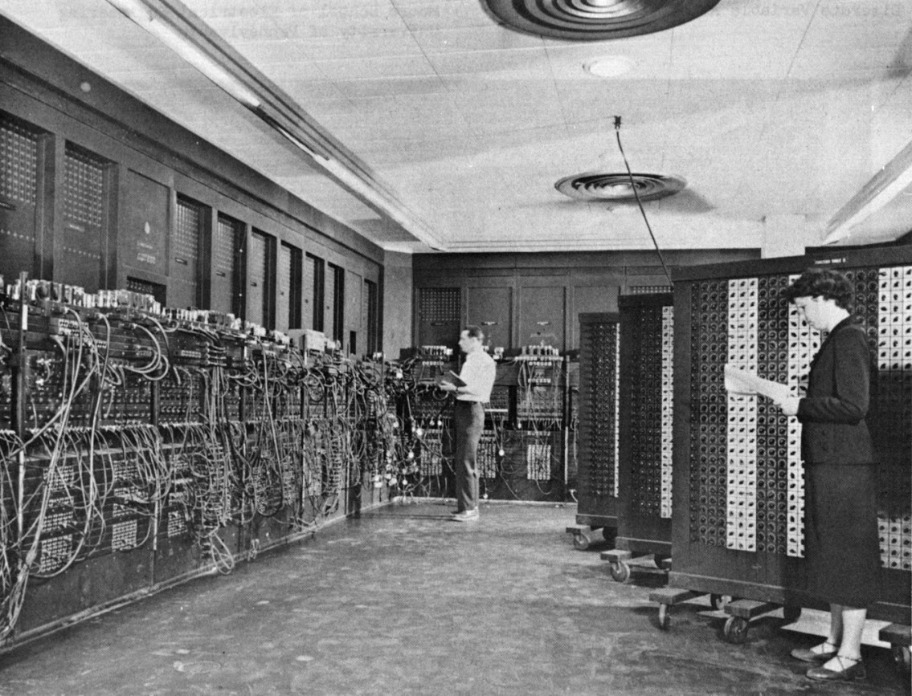

A computer scientist is a person who has acquired the knowledge of computer science, the study of the theoretical foundations of information and computation and their application.
Electronic Numerical Integrator and Computer was the first programmable, electronic, general-purpose digital computer made in 1945.There were other computers that had these features, but the ENIAC had all of them in one package. It was Turing-complete and able to solve "a large class of numerical problems" through reprogramming.
